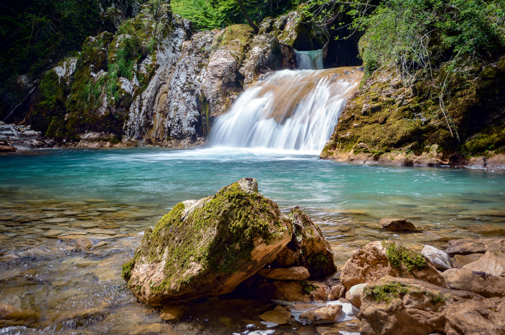

Broj indexa: 2843/2018.
Odsjek: Komparativna književnost i informacijske nauke
Studijska grupa: Bibliotekarstvo i arheologija
Za dalje informacije kliknite ovdje ili nas kontaktirajte na e-mail adresuPrirodni krajolici na području općine Kotor Varoš, odlikuju se posebnom ljepotom. To je mjesto gdje se spajaju bosanske planine s panonskom nizijom.
Hello darkness, my old friend
I've come to talk with you again
Because a vision softly creeping
Left its seeds while I was sleeping
And the vision that was planted in my brain
Still remains
Within the sound of silence
In restless dreams I walked alone Narrow streets of cobblestone 'Neath the halo of a street lamp I turned my collar to the cold and damp When my eyes were stabbed by the flash of a neon light That split the night And touched the sound of silence
| Naziv predmeta: | Oblikovanje mrežnih stranica | Upravljanje informacijskim institucijama | Geologija kvartara | Metodologija naučnih istraživanja |
|---|---|---|---|---|
| Predmetni profesor: | dr. Lejla Hajdarpašić | dr. Lejla Kodrić-Zaimović | dr. Mevlida Operta | dr. Adnan Kaljanac |